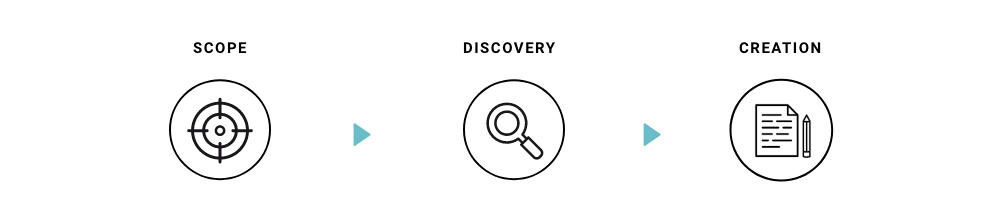

UX WIZARDS BRAND GUIDE
UX Wizards is a design community for enthusiasts of all levels to share knowledge and grow together. UX Wizards hosts various events for designers like Design Hackathons, UX Talks, and Book Clubs. This is the first Brand Guide to standardize design guidelines across the whole team. I was in charge of 2 of the 4 sections, Logo and Colors.

Challenge
UX Wizards was growing quickly, each volunteer used their own art styles, colors, and writing styles. The community needed a unified brand identity to establish itself. There was also the challenge of maintaining the spirit of the original logo in a brand as to not overwrite the group's origins and identity.
Goals
Identify the community's purpose, vision, mission, and style and align with stakeholders on those ideas. Express those identities into Brand Guide.
Successful Brand Guide is to
- communicate a consistent message to the audience
- has better brand recognition
- expresses fun and magical feel, like UX Wizards’ name
- help designs and writers create content that is more effective
Process
Scope
Before starting Brand Guide, the team set the project scope. We discussed ideas of what we’d like to include in the Brand Guide. Since this is the first brand guide, we decided to start small and scale up later if we’d like to add more content.
For the MVP, we prioritized the most necessary elements and chose these 4 sections.
- Tone of voice
- Logo
- Color
- Typography
Discovery
We conducted a survey of the community leaders to learn their visions for the group. This survey and the follow-up interview became our blueprint for the mission and the Brand Guide.
We researched other design communities and how they position their brand. We went through multiple brand guides to learn style, organization, content and layout.
Using Pinterest we made Moodboard to explore the design style. First, designers collected images and colors that were inspirational to the brand design. Then, we went through the collection visuals and discussed the design direction to make sure we were on the same page before moving on to the creation stage.
Moodboard and its discussion lead the direction of inclusive, gender neutral, plus a fun and magical feel. This is because community members are various ages, mixed genders and from different backgrounds. We wanted everyone to feel welcomed through the brand.
Creation
A group of Designers and UX writers took responsibility for each section and created a draft. Then the draft was then reviewed with the team and stakeholders. According to the feedback, multiple iterations were made. After each section was completed, we consolidated the sections into one layout and finalized it.
Brand Guide Sections
The Brand Guide had 4 sections. The 2 sections I led were Logo and Colors. In separate documents I cover these sections in detail below. I highlight the major process in the 2 other sections Tone of voice and Typography. You can also view the finished brand guild here.
VIEW BRAND GUIDE
Logo
Along with creating a Brand Guide, we decided to update the logo. The original logo had been used for over a year. If we made the change too drastic, there would be some risk that people may not recognize that it represented the same community. Therefore, we set the goal to simplify the current logo to make it more versatile and gender neutral.
To achieve this goal, these 3 things were applied to the new design:
- use wizard hat as the main element
- keep the original logo’s font, decorative frame, cursor element and color
- use hand drawn lines to keep a crafty feel
Our first plan was to keep the original turquoise color. However, white text on turquoise didn’t pass the accessibility test. We decided to adopt navy as the new logo color.
Read more Logo Process


Color
Our vision of our color palette is playful, magical and fun. The team was leaning towards having turquoise and purple colors on the color palette during the discovery phase. Turquoise is from the original logo color and purple was because it has a magical feel. I started testing color schemes with turquoise and purple. After adding neutral and accent colors, I refined the palette to find the right balance and tone.
Finalizing the palette was challenging. I was questioning myself: Does this color really work? How do I know this color is better than the others? I decided to use an illustration and tested several color schemes to visualize the color usage and the balance. This experiment helped me grasp how color schemes could change the feel.
Neutral colors, navy, white and light purple are added to unify diverse color palettes. Accent colors, red and yellow spice up the graphic.
Read more Color Process


Tone of voice
We conducted a survey for the community leaders and asked questions that included a mission statement and words to describe the community. The UX writers consolidated the answers and followed up with the community leaders to learn more details about their visions.
During the process of creating the Tone of Voice category, we found we needed to make 2 new sections Mission and Who We Are before diving into Tone of Voice because knowing that the community's goals are for enthusiasts with a focus on learning means we wanted to use a more playful tone. Multiple content iterations had been made before launching to ensure a tone of voice to fit our mission and goals.
Typography
We chose our typefaces using 2 criteria: font legibility and if the font had a good selection of styles and weights. We explored typography options and font combinations by selecting a set of fonts. With each font we styled a sample paragraph including a header, body and button.
After testing all the fonts, the team chose the Overpass. This font has a good selection of weights and is great for both headers and body text. We also felt a connection with this font because the Overpass font is used in road signals all around America which ties into UX Wizard’s diverse membership.
USE CASE OF THE BRAND GUIDE
This brand guide is used for websites, event banners, marketing materials and the design system.

Results
After this Brand Guide project, UX Wizards added 4 teams for Design, Content Design, Web and Merch. Each team is using the Brand Guide to make graphics, write social media posts and create websites. Over 30 volunteers are using the Brand Guide and speak one voice. The Brand Guide is reviewed regularly and still evolving.
Major Brand Guide Versions
The Brand Guide was launched in July 2020 and it was reviewed 6 month later. After the review, a new version of the Brand Guide was launched in April 2021. We gathered feedback and decided to update Who We Are, Mission, Tone and Voice and Logo. Icon style is newly added to the Brand Guide.
April 2021, V2 Brand Guide Major updates
- Tone of Voice: Expanded to offer concrete guidance. Personality and Values were added to the page to identify the brand character. Styling Tips was included to suggest ways of improving writing.
- Logo: Set the square logo to be the main logo. Previous main logo was discontinued because it was too detailed and not balanced well within a graphic. Also the logo’s typography was switched from Titillium Web to Overpass.
VIEW LATEST
BRAND GUIDE
PROJECT: UX Wizards Brand Guide
YEAR: 2020
ROLE: Designer, Project Lead
TEAM: Seiko(self), Joanne (Designer), Gabi (Designer), Alena (Designer), King (Content Writer), Nick (Content Writer)
BY: Adobe XD